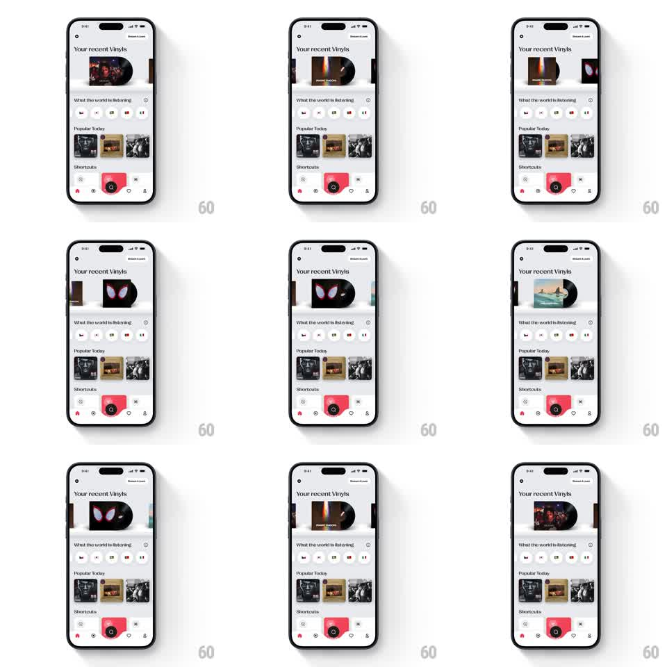

Media
Frame-by-frame

Rebuild this interaction 1:1: Vinyls' record carousel - swiping "Your recent Vinyls" slides each centered sleeve's black record out of its jacket to the right, spinning, and tucks it back in as the sleeve leaves focus.

Rebuild this interaction 1:1: Vinyls' record carousel - swiping "Your recent Vinyls" slides each centered sleeve's black record out of its jacket to the right, spinning, and tucks it back in as the sleeve leaves focus. ## Integration Integration: stack-agnostic spec - springs given as stiffness/damping, timed motions as duration + curve; map every value to your framework and animation library of choice. ## Scene Light screen: "Your recent Vinyls" header with a Shuffle All pill, the horizontal sleeve carousel (album jackets, adjacent sleeves peeking), then "What the world is listening" filter chips, a "Popular Today" album grid, a "Shortcuts" row, and the tab bar with the red center action button. ## Motion spec Pattern: focus-driven record slide-out, gesture-driven. - Scroll: sleeves move 1:1 with the drag and snap to center (spring ~340/24). - Slide-out: as a sleeve approaches center (0.5 -> 0 offset), its record eases out to the right (60% of its diameter exposed at full focus, tied 1:1 to offset) and begins rotating (33rpm visual, ~1.8s/rev). - Tuck: leaving center reverses the slide (same 1:1 mapping) and the spin decays (800ms ease-out) rather than stopping dead. - Focus: the centered sleeve lifts with a shadow grow (200ms); side sleeves scale 0.92 and dim 8%. ## Calibration - Record exposure is position-driven - half-focused shows half-exposed vinyl. - The record spins only when at least 30% exposed. ## Reduced motion Record pops out at focus without spin (150ms); no rotation. ## Don't miss - The record is black with a tiny label dot - the groove sheen catches light as it spins. - The sleeve's right edge stays open; the record never overlaps the next sleeve.